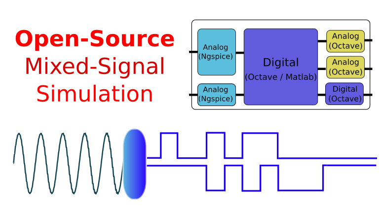
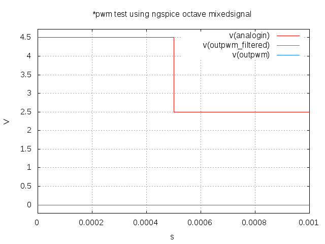

Tiago Oliveira Weber
Open-Source Mixed-Signal Simulation: How to Describe Blocks in Octave/Matlab and Interact them with Ngspice
by Tiago Oliveira Weber

Mixed-signal simulation is the type of simulation in which analog and digital signals coexist in the same circuit. There are many types of systems that can be best analyzed through mixed-signal simulation. They are paramount for simulating circuits including Analog-Digital and Digital-Analog Converters (ADCs and DACs). For instance, to simulate how a microcontroller interact with peripherals through an ADC, one could benefit from this type of simulation.
In the seek of an open-source solution for mixed-signal simulation, I developed an Octave package (Octave is a open source software that uses the same language as Matlab) that allows Octave to control the simulation through ngspice shared api (using as base the ngspice/octave gateway made by … ).
This is not even by far intended to be a solution for industry professionals. The focus is to allow high-level modelling using Octave/Matlab in simple projects. Hopefully, someone besides me will find use of it to explore system and circuit ideas.
How I Learned to Stop Worrying and Love Octave and Ngspice for Circuit Simulation
We usually simulate analog circuits through SPICE circuit simulators. On the other hand, we usually use a Hardware Description Language (HDL) such as Verilog or VHDL using specific simulators for the digital section. If simulation time was not an issue, we could consider all signals as being analog and simulate the whole circuit as a SPICE netlist. However, due to the level of abstraction that digital circuits allow us to operate in, this would be an enormous waste of time.
Different Tools for Different Problems
Before introducing the proposed package, I would like to discuss some of the cases in which a designer might want to use different tool sets for simulation.
System Simulation without Circuit Blocks
There are other occasions in which we are only interested in high-level analysis of a system. On these cases, all blocks are described mathematically and no circuit simulator is needed. One of the most used commercial solutions to that is Matlab/Simulink®. The open-source solution would be Octave (if no GUI to draw diagram is needed) or Scilab/XCOS (if diagrams to describe the blocks are welcome).
Circuit Simulator and Post-Simulation Analysis with External Program
Sometimes we are not interested in modelling a block with a high-level language, but only interested in analyzing the output of the circuit with the aid of these high-level tools. For those cases, usually Matlab or Octave are used to perform post-simulation analysis. In this approach, the circuit simulator acts independently and its output (waveforms and measurements) are used as input to a script in Matlab or Octave.
Co-simulation of blocks described as circuits and blocks described in high-level language
The case of interest of this article is when we want to model a block (e.g.: counter, ADC, DAC, sensor, receiver, transceiver, …) in a more abstract way and simulate it together with other blocks described as circuits.
If the block we want to describe in a high-level language is digital, we will probably use Verilog or VHDL to describe it. If the block is analog, one of the options is to use Verilog-A. There are commercial and open-source tools that allow these models to be used in a simulation together with circuits. QUCS and Ngspice are open-source tools that provide a way to add Verilog-A models to the simulation, but not without some pain as you go through the compilation procedure of each block. Even using commercial tools, the debugging of what went wrong on a Verilog-A model is not for the fainted-hearted.
However, sometimes I just want to add some high-level block without worrying about too much implementation details. In this case you could use systemC-AMS, which is a library for C++ which enables you to simulate digital and analog sections using transaction-level modelling (TLM).
For the cases in which system functionality exploration is the ultimate goal, however, I would rather use a well-known high-level language, such as Matlab and Octave to model some blocks.
The Solution
In order to do co-simulation of blocks described as circuits and blocks described in high-level language using Octave, I propose a package to perform the interface between Ngspice and Octave. Easy prototyping is one of the reasons Matlab is one of the greatest tools for scientists. The codes are easy to write, to understand and to debug.
The objectives of this package are to:
- allow the use of Matlab or Octave to describe the digital blocks or analog blocks with voltage input/output;
- allow simulation of mixed-signal circuits using open-source tools;
One using octave or matlab for modelling blocks needs to keep in mind this is not a synthesys-oriented approach. It is useful for behavioral modelling only.
Example (PWM block and analog output filter)
Octave Block to Describe a Simple PWM Logic
function [pinvalue] = pwm(pinvalue,currenttime,vhigh,isfirst); max_cycles = 40; analog_in = pinvalue(1); global counter if (isfirst) counter = 0; elseif (counter > max_cycles) counter = 0; else counter = counter + 1; end idealdutycycle = analog_in/vhigh; high_cycles = round(max_cycles*idealdutycycle); if (counter <= high_cycles) digital_out = vhigh; else digital_out = 0; end pinvalue(2) = digital_out; endfunction
SPICE Netlist of PWM Block and Analog Filter
*PWM Test using Ngspice Octave Mixedsignal .param clk_freq = 1e6 .param clk_per = '1/clk_freq' .param cap_value = 1e-6 V1 vdd 0 5 Xpwm analogin outpwm clk pwm Rout outpwm outpwm_filtered '(clk_per*40*2)/cap_value' Cout outpwm_filtered 0 'cap_value' Rdummy outpwm_filtered 0 10meg Vclock clk 0 PULSE(0 5 0 10n 10n 'clk_per/2' 'clk_per') *Vin analogin 0 SIN(2.5 1 1k) Vin analogin 0 PULSE(2.5 4.5 0 10n 10n 0.5e-3 1e-3) .subckt pwm in1 out1 clock edge=1 clockth=2.5 octave=1 vhigh=5 .ends .tran 1e-6 1e-3 .print tran v(outpwm_filtered) v(analogin) .end .control run set gnuplot_terminal=png gnuplot $file v(analogin) v(outpwm_filtered) v(outpwm) .endc
PWM Results

<div id="disqus_thread"></div> <script> var disqus_config = function () { this.page.url = tiagoweber.github.io; / Replace PAGE_URL with your page's canonical URL variable this.page.identifier = entry5; / Replace PAGE_IDENTIFIER with your page's unique identifier variable }; (function() { // DON'T EDIT BELOW THIS LINE var d = document, s = d.createElement('script'); s.src = '//tiagoweber.disqus.com/embed.js'; s.setAttribute('data-timestamp', +new Date()); (d.head || d.body).appendChild(s); })(); </script> <noscript>Please enable JavaScript to view the <a href="https://disqus.com/?ref_noscript" rel="nofollow">comments powered by Disqus.</a></noscript>